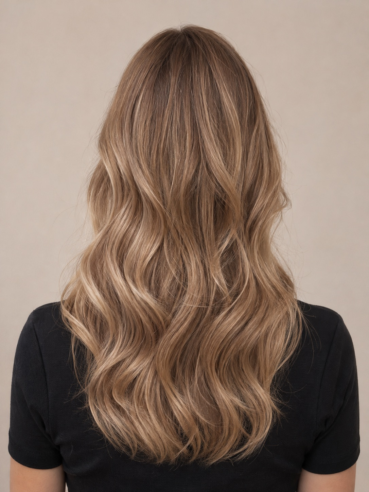

Una nuova idea
di te.
Il colore che ti somiglia. Il taglio che ti valorizza.
Un momento tutto tuo, da Idea Donna.
Donna, uomo e la voglia di sentirsi bene.

Si parte da un’idea.
La tua, prima di tutto.
Una sfumatura diversa, un taglio nuovo o semplicemente la tua piega preferita. Qui ad Agno ci prendiamo il tempo di ascoltarti e trovare insieme quello che ti fa stare bene.
Perché i capelli raccontano qualcosa di te.
Noi ti aiutiamo a dirlo, a modo tuo.
Un bel cambiamento.
O il tuo solito, fatto bene.
Dal primo consiglio all’ultimo colpo di spazzola,
costruiamo il tuo look insieme.
01Taglio & piega
DONNA E UOMO
Linee, volumi e movimento. Un taglio pensato per te, una piega che accompagna la tua giornata. Anche taglio uomo e styling.
02Colore & sfumature
LA TUA PERSONALITÀ, A COLORI
Dal colore pieno alle schiariture, dal balayage ai riflessi più creativi. Troviamo insieme il tono che ti rappresenta.
03Cura & trattamenti
UN PO’ DI ATTENZIONE IN PIÙ
Cheratina, laminazione e impacchi: scegliamo il percorso di cura in base ai tuoi capelli e al risultato che desideri.
04Acconciature
PER QUEL GIORNO SPECIALE
Raccolti, intrecci e onde per le occasioni che vuoi ricordare. Raccontaci la tua idea: pensiamo insieme ai dettagli.
Raccontaci la tua occasione ↗Il cambiamento,
prima di farlo.
Tre tagli, sei sfumature.
Il piacere di provare qualcosa di nuovo.

Onde morbide
Caramello · radice sfumata
La luce giusta, senza cambiare chi sei.Modelli fotografici generati con AI. Il colore è una simulazione: il risultato sui tuoi capelli si definisce insieme in salone.
Lasciati ispirare.
Onde, luce e voglia di cambiare.
Qual è la tua prossima idea?
Immagini ricavate dagli screenshot forniti per questa demo.
Bellezza, fino alle dita.
In salone trovi anche MI Nails: manicure, semipermanente, ricostruzione e nail art. Quel piccolo dettaglio che completa il tuo momento.
La tua prossima
bella idea, in agenda.
Prova a scegliere servizio, giorno e orario.
Per un appuntamento reale, chiamaci al
091 605 13 59.
La porta è aperta.
Le idee, anche.
091 605 13 59 ↗DOVE SIAMO
Salone Idea Donna
Palazzo Immo Grazia
Contrada San Marco 4
6982 Agno, Ticino
QUANDO CI TROVI
- Martedì – venerdì
- 08:30 – 18:00
- Sabato
- 08:30 – 17:00
- Domenica e lunedì
- Chiuso